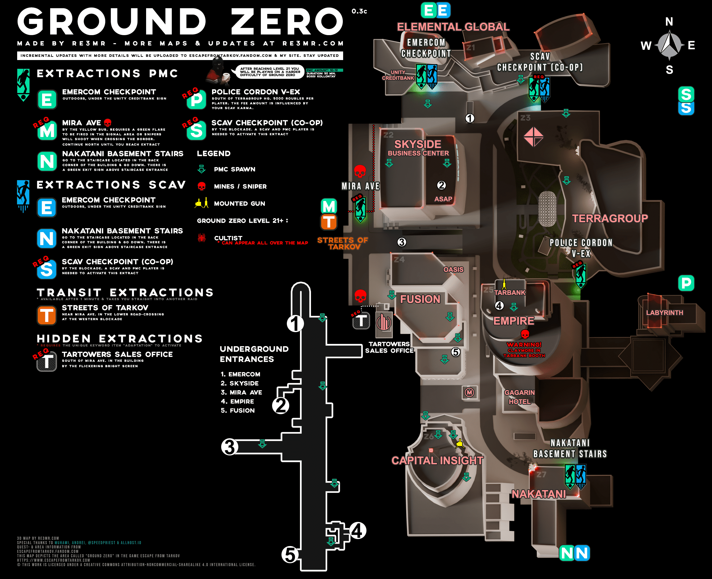

Make the map yours.
Zoom into the route, draw a line, pin a note. Your map position and annotations are there when you come back.
A desktop companion for Escape from Tarkov
The map. The ammo chart. That item's price.
Keep what you need one shortcut away.
Windows 10 / 11 · x64 · One EXE + map folders
Release notes & checksum
Reference tabs on demand
Browsers unload when hidden
Maps & notes stored locally
A small field kit for the moments between decisions. Bring it up over a borderless or windowed game, then hide it with the same shortcut.
Zoom into the route, draw a line, pin a note. Your map position and annotations are there when you come back.
Hover an inventory item and press Alt + F for a price card. Press again to open it on tarkov.dev.
Screen-based scanner: designed for 1080p at 100% scale. Items sharing an image can be ambiguous.
Tarkov.dev, the Wiki and eft-ammo in one window. Choose a tab and start looking up the next item, quest or round.
Choose a display in Settings → Fullscreen monitor, or let TLO pick a non-main display automatically. Fill it in borderless fullscreen, then press the same shortcut to restore your previous window position and size.
Ctrl + Shift + M
Change the shortcut in Settings → Shortcuts → Second monitor / restore. The title-bar button does the same thing.
No installer. No account.
Download, extract, open.
One app executable, with maps and data in their own folders. The runtime is bundled inside TLO.exe, with no loose DLLs.
TLO opens on its first run and lives in your system tray. Use Borderless or Windowed mode in Tarkov.
Open Settings from the title bar or tray. Assign your own shortcuts for the overlay, monitor toggle, tabs and scanner.